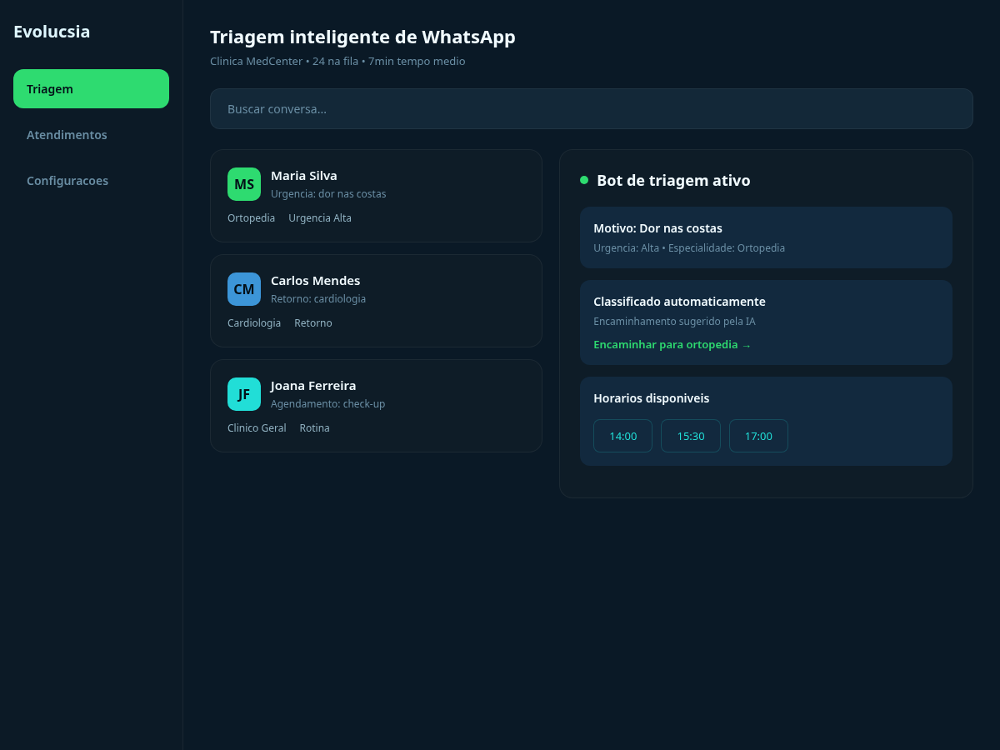
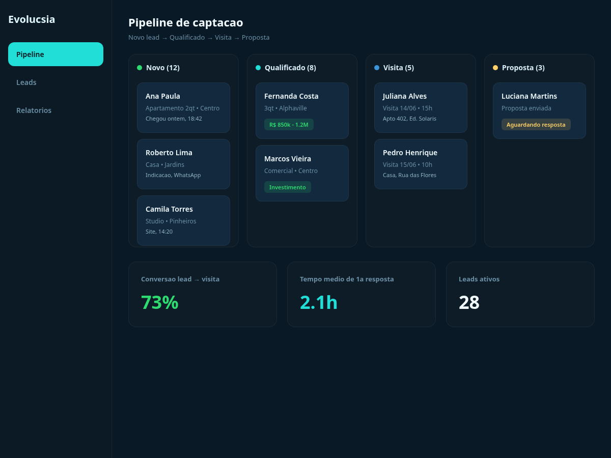
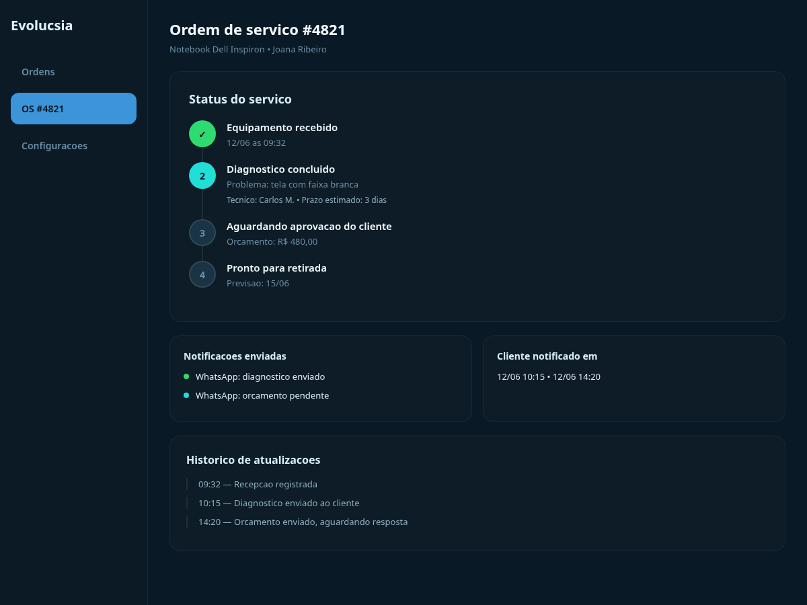
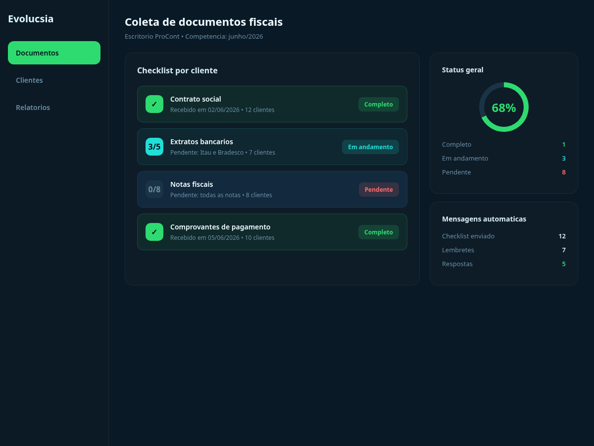
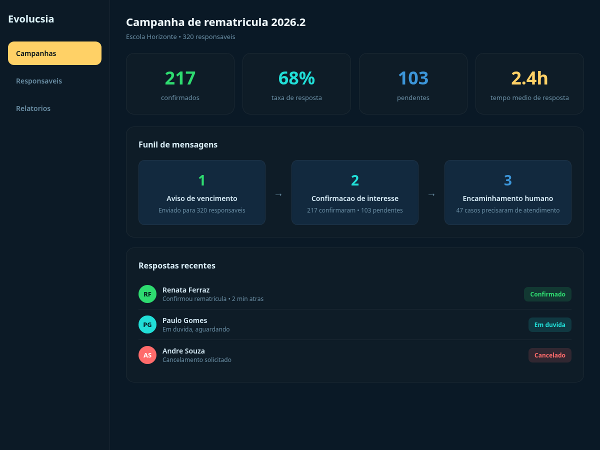
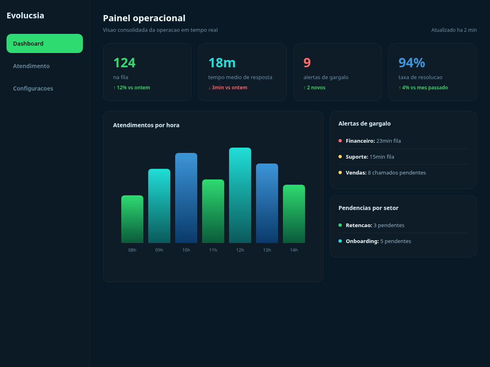

Respostas automáticas, qualificação inicial e organização de contatos.
Automação com IA para a vida real
Menos trabalho manual. Mais agilidade, atendimento e controle.
A Evolucsia ajuda empresas e operações enxutas a automatizar atendimento, respostas, organização de demandas, follow-up, cobrança, triagem e processos que hoje ainda dependem de alguém fazendo tudo na mão.
- Atendimento mais rápido no WhatsApp
- Menos retrabalho e atraso operacional
- Processos mais organizados sem aumentar equipe
Tempo
Recupere horas perdidas com atendimento, repetição e tarefas operacionais.
Ordem
Crie processos mais claros para não depender da memória ou correria do dia.
Resposta
Atenda mais rápido e com mais consistência, mesmo com equipe pequena.
Automações
Onde a tecnologia resolve problema chato, repetitivo e caro.
A Evolucsia não entra com pacote genérico. O foco é automatizar aquilo que trava o dia a dia do negócio: atendimento, organização, retorno para cliente, triagem e rotinas que ficam acumulando nas costas da equipe.
WhatsApp e atendimento automatizado
Automatize perguntas frequentes, coleta de dados, triagem inicial e respostas para que o cliente não fique esperando e a equipe não perca tempo repetindo tudo.
Follow-up e retorno para clientes
Disparos, lembretes, confirmações, cobranças leves e acompanhamentos podem seguir fluxo automático para reduzir esquecimento e aumentar resposta.
Organização de demandas e processos
Estruturamos entradas, prioridades, repasses e registros para a operação parar de viver de improviso, conversa solta e retrabalho.
Automações sob medida para negócio local
Clínica, escritório, loja, prestação de serviço ou operação comercial: desenhamos a automação conforme a realidade do seu atendimento e do seu processo.
Integração com ferramentas que você já usa
Conectamos a automação com planilhas, CRM, e-mail e outros sistemas que já fazem parte do seu dia a dia — sem precisar trocar de ferramenta nem começar do zero.
Monitoramento e insights da operação
Relatórios automáticos sobre volume de atendimento, tempo de resposta, gargalos recorrentes e oportunidades de melhoria para decisões mais rápidas e seguras.
Portfólio
Automação real para problemas reais.
Cada projeto foi desenhado para um gargalo específico. Veja como a automação se integra ao dia a dia de diferentes tipos de operação.

Triagem inteligente de WhatsApp
Filtrou motivo, urgência e especialidade antes da equipe tocar no atendimento.

Funil de captação com follow-up automático
Do primeiro contato até a visita agendada, sem lead esquecido no meio do caminho.

Portal de status para acompanhamento de serviço
Cliente acompanha cada etapa — da entrada ao pronto — sem ligar nem aparecer no balcão.

Coleta automática de documentos fiscais
Checklist, recebimento e validação de arquivos sem perseguir cliente por WhatsApp.

Rematrícula e cobrança com mensagens temporizadas
Lembretes, confirmações e encaminhamento automáticos para fechar matrícula mais rápido.

Painel operacional com gargalos e métricas em tempo real
Fila ativa, tempo de resposta e pendências num só lugar para decisões mais rápidas.
Por que agora
Em negócio pequeno e médio, a maior dor não é “inovação”. É excesso de coisa manual.
Em muitas empresas, especialmente fora dos grandes centros, o problema está no operacional: cliente esperando resposta, informação espalhada, cobrança esquecida, demanda mal repassada e equipe sobrecarregada.
A Evolucsia usa automação com IA para atacar exatamente isso. Menos discurso de tendência e mais solução prática para a rotina funcionar melhor.
Automação boa é a que resolve um gargalo real logo nas primeiras semanas.
Nada de complicar a operação com ferramenta bonita que ninguém consegue manter.
O objetivo é ganhar tempo, responder melhor e organizar o negócio sem inflar equipe.
Processo
Como transformamos rotina pesada em fluxo mais leve e controlado.
01
Mapeamento do gargalo
Primeiro entendemos onde sua operação perde tempo, atrasa resposta e depende demais de esforço manual.
02
Desenho da automação
Definimos fluxo, mensagens, integrações e regras para automatizar sem travar a operação nem criar dependência desnecessária.
03
Implementação e ajuste fino
Colocamos para rodar, acompanhamos o uso e refinamos o que for preciso para a automação realmente aliviar o dia a dia.
Resultados
O que melhora quando a empresa para de depender de tudo no braço.
Mais agilidade
O cliente recebe resposta, retorno e direcionamento com menos demora.
Mais tempo para o essencial
A equipe sai de tarefas repetitivas e volta a focar no que exige atenção humana.
Mais controle
Menos esquecimento, menos conversa perdida e mais clareza sobre o que está acontecendo.
Dúvidas frequentes
Automação com IA sem complicar a rotina da empresa.
Respostas diretas para quem quer automatizar atendimento, WhatsApp e processos sem transformar a operação em um projeto pesado demais.
O que a Evolucsia automatiza?
Automatizamos atendimento via WhatsApp, perguntas frequentes, triagem de clientes, follow-up, lembretes, cobranças leves e organização de demandas operacionais.
Serve para empresas pequenas?
Sim. O foco é ajudar empresas pequenas e médias a ganhar tempo, responder melhor e organizar processos sem precisar aumentar equipe.
Como começa um projeto?
Primeiro mapeamos onde há atraso, repetição, esquecimento ou trabalho manual em excesso. Depois desenhamos e implementamos o fluxo de automação.
Contato
Se sua empresa precisa automatizar atendimento e operação, a conversa começa aqui.
A primeira conversa já ajuda a identificar o que mais toma tempo hoje e qual automação pode aliviar sua rotina com mais impacto.